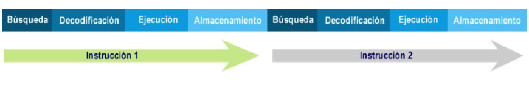
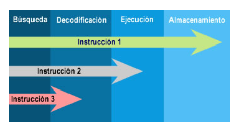

La Unidad de Procesamiento (CPU) controla el funcionamiento del computador y lleva a cabo sus funciones de procesamiento de datos. Frecuentemente se le llama procesador. Un procesador, incluye tanto registros visibles por el usuario como registros de control/estado. Los registros visibles por el usuario pueden ser de uso general o tener una utilidad especial, mientras que los registros de control y estado se usan para controlar el funcionamiento del procesador, un claro ejemplo es el contador de programa. Lleva a cabo una gran variedad de:
¿Qué son los registros del CPU?
Se emplean para controlar las instrucciones en ejecución, manejar direccionamiento de memoria y propiciar la capacidad aritmética.
Los registros vienen de tres tipos: datos, direcciones e índice, que tiene lugar en casi todos los aspectos de la operación del CPU.
El tamaño de un registro depende del CPU; los más simples tienen registros que aceptan 8 o 16 bits de datos y los más complejos tienen registros de 32, 48 o 64 bits
Un registro visible al usuario es aquél que puede ser referenciado por medio del lenguaje máquina que ejecuta la CPU.
Prácticamente todos los diseños contemporáneos de
CPUs están provistos de varios registros visibles al usuario, en oposición a disponer de un único acumulador.
Podemos clasificarlos en:
Registros de control.
Hay diversos registros de la CPU que se pueden emplear para controlar su funcionamiento. La mayoría de éstos, en la mayor parte de las máquinas, no son visibles al usuario.
Algunos de ellos pueden ser visibles a instrucciones de máquina ejecutadas en un modo de control o de sistema operativo.
Naturalmente, máquinas diferentes tendrán diferentes organizaciones de registros y usará distinta terminología. Se enumera aquí una lista razonablemente completa de tipos de registros, con una breve descripción.
Son esenciales cuatro registros para la ejecución de una instrucción: el contador de programa , el registro de dirección, el registro de instrucción y el registro de datos.
El contador de programa contiene una dirección de instrucción. Típicamente, la CPU actualiza el PC después de cada captación de instrucción de manera que siempre apunta a la siguiente instrucción a ejecutar.
Una instrucción de bifurcación o salto también modificará el contenido de PC. La instrucción captada se carga en el registro de instrucción, donde son analizados el código de operación y los campos de operando.
Se intercambian datos con la memoria por medio de registro de direcciones y el de datos. En un sistema con organización de bus, el de direcciones se conecta directamente al bus de direcciones, y el de datos directamente al bus de datos.
Los registros visibles al usuario, sucesivamente, intercambian datos con el de datos. Los cuatro registros que acaban de mencionar se usan para la transferencia de datos entre la CPU y la memoria. Dentro de la CPU, los datos tienen que ofrecerse a la ALU para su procesamiento.
La ALU puede tener acceso directo al de datos y a los registros visibles al usuario. Como alternativa, puede haber registros intermedios adicionales en el límite de la ALU; estos registros sirven como registros de entrada y salida de la ALU e intercambian datos con el de datos y los registros visibles al usuario.
¿Qué es un registro de estado?
El registro de estado, también conocido como registro de bandera, palabra de estado del programa y registro de código de condición, se define como un conjunto de bits de bandera dentro de un procesador.
Un registro es un circuito procesador y es muy parecido a una ubicación de memoria, lo que significa que los datos podrían escribirse y leerse. A diferencia de una ubicación de memoria, el registro de estado a menudo no tiene una
dirección porque el microprocesador la usa internamente. En una unidad central de procesamiento (CPU) de 8 bits, se puede establecer un bit de registro de estado, igual al número 1, o borrar , igual al número 0, mediante una variedad de resultados de operación del procesador. El procesador a veces establece o borra los bits, pero otras veces, una instrucción de programa particular establece o borra los bits.
Los bits de registro de estado también se denominan banderas o bits de bandera, y el programador los utiliza para ciertos fines de programación. Cada bandera en un registro de estado tiene un propósito único.
El indicador de acarreo se establece si una operación anterior hizo que el séptimo bit - o indicador negativo - se desbordara, o hiciera que el indicador de transporte se desbordara. Se establece durante los cambios de lógica,
comparación y aritmética. El indicador de cero se establece si el resultado de la operación más reciente fue 0.
Un indicador llamado "deshabilitar interrupción" funciona permitiendo o deshabilitando la operación de interrupciones, que son instrucciones que detienen temporalmente ciertas operaciones para que se puedan realizar otras operaciones.
Cuando se establece este indicador en particular, no se permite que funcionen las interrupciones, pero cuando está claro, se permiten las interrupciones. Otra bandera llamada bandera decimal permite al procesador seguir un modo binario más avanzado para realizar ecuaciones aritméticas impecables. Cuando se establece la bandera, utiliza este modo binario avanzado. Otro bit de registro es el bit de interrupción, que se establece cuando se ejecuta el comando Force Interrupt (BRK).
Ciclos de computadora La búsqueda es el proceso de obtener instrucciones de un programa o un elemento de datos de la memoria. El término decodificar se refiere al proceso de traducir las instrucciones a señales que la computadora puede ejecutar. Ejecutar es el proceso de llevar a cabo los comandos. Almacenamiento en este contexto significa escribir el resultado a la memoria. En algunas computadoras, el procesador busca, decodifica, ejecuta y almacena solo una instrucción a la vez. En estas computadoras el procesador espera hasta que una instrucción completa las cuatro etapas del ciclo antes de iniciar a trabajar con la siguiente instrucción. Hoy día la mayoría de las computadoras personales soportan un concepto llamado pipelining. Con pipelining los procesadores inician la búsqueda de una segunda instrucción antes de que se haya completado el ciclo de la computadora de la primera instrucción. Los procesadores que cuentan con pipelining habilitado son más rápidos en el procesamiento porque no tienen que esperar para que una instrucción complete el ciclo de computadora antes de buscar la siguiente.

Ciclo de computadora sin pipelining.

Ciclo de computadora con pipelining.
El encargado de ejecutar un programa en una computadora
u otro sistema computacional es el CPU, lo realiza siguiendo el llamado ciclo Fetch Decode Execute,
con este ciclo se ejecutan
todas las tareas que una computadora puede realizar.
Este ciclo tiene algunas variantes y conforme ha avanzado el tiempo y la tecnología ha sufrido algunos cambios, pero el
ciclo básico se conforma de las siguientes etapas:
La segmentación (en inglés pipelining, literalmente 'tubería' o 'cañería', o data pipeline) es un método por el cual se consigue aumentar el rendimiento de algunos sistemas electrónicos digitales.
Se usa principalmente en los microprocesadores.
El nombre, por analogía, viene de que para impulsar el gas en un oleoducto a la máxima velocidad posible es necesario dividir el oleoducto en tramos y colocar una bomba que dé un nuevo impulso al gas.
El símil con la programación existe en que los cálculos deben ser registrados o sincronizados con el reloj cada cierto tiempo para que la ruta crítica (tramo con más carga o retardo computacional entre dos registros de reloj) se reduzca.
La ruta crítica es en realidad la frecuencia máxima de trabajo alcanzada por el conjunto. A mayor ruta crítica (tiempo o retraso entre registros) menor es la frecuencia máxima de trabajo y a menor ruta
crítica mayor frecuencia de trabajo. La una es la inversa de la otra. Repartir o segmentar equitativamente el cálculo hace que esa frecuencia sea la óptima a costa de más área para el
almacenamiento o registro de los datos intervinientes y de un retraso o latencia (en ciclos de reloj/tiempo) en la salida del resultado equivalente al número de segmentaciones o registros realizados.
La ventaja primordial de este sistema es que, tal y como se muestra en la imagen, una vez el canal (pipe) está lleno, es decir, después de una latencia de cuatro en la imagen, los resultados de cada comando
vienen uno tras otro cada flanco de reloj y sin latencia extra por estar encadenados dentro del mismo canal. Todo esto habiendo maximizado la frecuencia máxima de trabajo.
Un conjunto de instrucciones o repertorio de instrucciones, juego de instrucciones o ISA (del inglés Instruction Set Architecture, Arquitectura del Conjunto de Instrucciones)
es una especificación que detalla las instrucciones que una CPU de un ordenador puede entender y ejecutar, o el conjunto de todos los comandos implementados por un diseño particular de una CPU.
El término describe los aspectos del procesador generalmente visibles a un programador, incluyendo los tipos de datos nativos, las instrucciones, los registros,
la arquitectura de memoria y las interrupciones, entre otros aspectos.
Existe principalmente de 3 tipos: CISC (Complex Instruction Set Computer), RISC (Reduced Instruction Set Computer) y SISC (Specific Instruction Set Computer).
La arquitectura del conjunto de instrucciones (ISA) se emplea a veces para distinguir este conjunto de características de la microarquitectura, que son los elementos y técnicas
que se emplean para implementar el conjunto de instrucciones. Entre estos elementos se encuentras las microinstrucciones y los sistemas de caché.
Procesadores con diferentes diseños internos pueden compartir un conjunto de instrucciones; por ejemplo el Intel Pentium y
AMD Athlon implementan versiones casi idénticas del conjunto de instrucciones x86, aunque tienen diseños internos completamente opuestos.
En informática, los modos de direccionamiento son las diferentes maneras de especificar un operando dentro de una instrucción en lenguaje ensamblador.
Un modo de direccionamiento especifica la forma de calcular la dirección de memoria efectiva de un operando mediante el uso de la información
contenida en registros y/o constantes, contenida dentro de una instrucción de la máquina o en otra parte.
No existe una forma generalmente aceptada de nombrar a los distintos modos de direccionamiento. En particular, los distintos autores y fabricantes de equipos pueden dar nombres
diferentes para el modo de hacer frente al mismo, o los mismos nombres, a los diferentes modos de direccionamiento.
Además, un modo de direccionamiento que en una determinada arquitectura se trata como un modo de direccionamiento, puede representar
la funcionalidad que en otra arquitectura está cubierto por dos o más modos de direccionamiento.